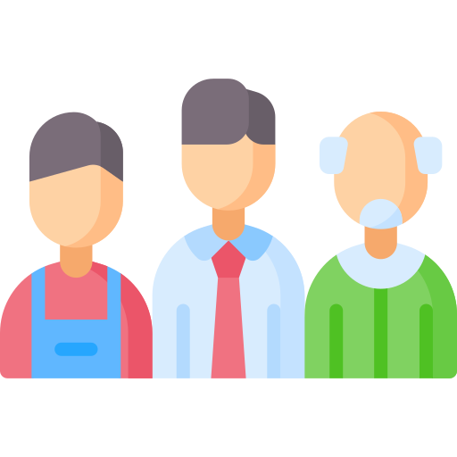

요즘 직장인들은 단순한 이직을 넘어 새로운 커리어를 설계하고 있습니다. 아래 항목을 통해 커리어 전환과 재정비, 재도약의 흐름을 확인해보세요.

세대별로 다른 이직의 이유, 어떤 차이가 있을까요?
내 전공과 상관없는 일, 도전은 어떻게 시작될까요?
커리어의 방향을 재정의하고 재설계하는 전략을 소개합니다.
본업 외 나만의 ‘부캐’는 커리어를 확장하는 힘이 됩니다.
새로운 도약을 위한 학습과 교육, 어디서 어떻게 시작할까요?